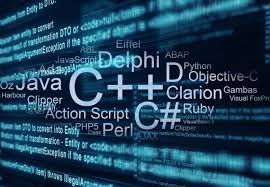
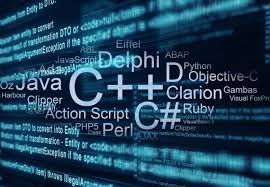

• 2 dakika okuma süresi
 

Beyza'nın Yazılım Yolculuğu
Merhaba! Ben Beyza, yeni mezun bir bilgisayar mühendisiyim ve bugün sizlerle yazılım dünyasındaki deneyimlerimi ve geleceğe dair planlarımı paylaşmak istiyorum.
Çeşitli Teknolojilerle Deneyimim
Üniversite hayatım boyunca farklı programlama dilleri ve teknolojilerle çalışma fırsatı buldum:
- Flutter: Mobil uygulama geliştirme deneyimi
- C Programlama: Temel programlama ve algoritma bilgisi
- Verilog: Donanım tanımlama ve dijital tasarım
- Java: Nesne yönelimli programlama projeleri
Kariyer Planlaması
Yeni mezun bir bilgisayar mühendisi olarak kariyerimi şekillendirirken şu adımları izlemeyi planlıyorum:
- Uzmanlaşmak istediğim alanı belirleme (Frontend, Backend, Mobile)
- Seçtiğim alanda derinlemesine bilgi edinme
- Açık kaynak projelere katkıda bulunma
- Kişisel projeler geliştirme
- Networking ve topluluk etkinliklerine katılım
Tavsiyeler
Benim gibi yeni mezun olan veya olmak üzere olan arkadaşlara tavsiyelerim:
- Sürekli öğrenmeye açık olun
- GitHub portfolyonuzu güncel tutun
- Online kurslara ve dokümantasyonlara göz atın
- Yazılım topluluklarına katılın
- İngilizce bilginizi geliştirin
Sonuç
Teknoloji dünyası sürekli gelişiyor ve değişiyor. Önemli olan bu değişime ayak uydurabilmek ve kendimizi sürekli geliştirebilmek. Umarım bu yazı, benzer durumda olan arkadaşlara yol gösterici olur.